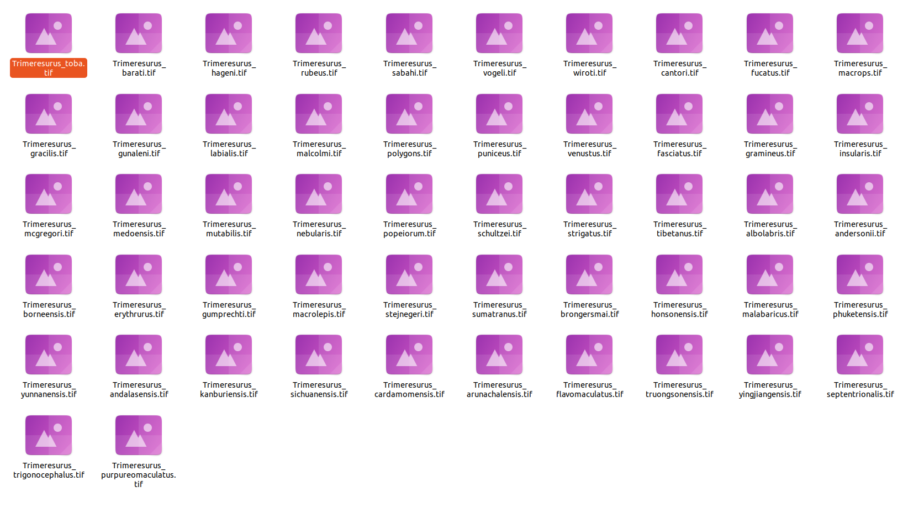

Omar Daniel
Leon-Alvarado¹²; J. Angel
Soto-Centeno²
¹ Department of Earth and Environmental Science, Rutgers University-Newark, NJ, USA.
² Department of Mammalogy, American Museum of Natural History, New
York City, NY, USA.
Although vilma is mainly designed to work with
occurrence records, such as those obtained from GBIF, occurrence points
are not the only type of spatial information that can be used in
biodiversity analyses. For example, if you work with ecological niche
models (ENMs), you may already have raster layers representing species
suitability or predicted distributions. Although vilma
includes an option to build ENMs using vilma.ENM, you can
also use raster outputs generated with other ENM algorithms or external
workflows.
To support this type of data, vilma includes the
function rat2occ, which transforms species distribution
rasters into occurrence-like coordinates and raster outputs. This allows
users to convert raster-based distribution maps into a format compatible
with the vilma workflow, making the package more flexible
for analyses based on point occurrences, species distribution polygons,
and raster-based predictions.
1. Data
For this exercise, the selected dataset consists of species
distribution rasters for the genus Trimeresurus (Viperidae).
These data can be stored in different raster formats, such as
TIF, ASCII, or IMG
files. However, once they are read into R, they are usually handled as
raster objects, such as SpatRaster objects from the
terra package or RasterLayer objects from the
raster package.
In many cases, each species will be represented by a separate raster
file. Because species may have different geographic distributions, these
rasters may also differ in their spatial extent. As a result, it may not
always be possible to combine them directly into a raster stack without
first standardizing their extent, resolution, and alignment. Therefore,
before using these data in vilma, a simple preparation step
is required.
The first step is to identify the directory where the raster files
are stored. Then, you will list the files in that directory and select
only the files with the .tif extension, which is the raster
format used in this example.

Figure 1. Folder with the raster files used in this excercise.
First, you need to set the working directory where the raster files
are stored. Then, use the dir() function to list the files
in that directory and grep() to select only the files with
the .tif extension. These are the raster files that will be
used in the analysis.
Once the .tif files have been identified, you can
transform the resulting vector into a list using as.list().
This step is useful because lists are easier to handle when working with
multiple files, especially when the same function needs to be applied to
each raster layer.
[1] "Trimeresurus_albolabris.dbf" "Trimeresurus_albolabris.prj" "Trimeresurus_albolabris.shp" "Trimeresurus_albolabris.shx" "Trimeresurus_albolabris.tif"[[1]]
[1] "Trimeresurus_albolabris.tif"
[[2]]
[1] "Trimeresurus_andalasensis.tif"
[[3]]
[1] "Trimeresurus_andersonii.tif"
[[4]]
[1] "Trimeresurus_arunachalensis.tif"
[[5]]
[1] "Trimeresurus_barati.tif"2. Read the rasters
This is a simple preparation step. First, each raster file in the
list is read using the rast() function and stored in a list
object. This is done with lapply(), which applies the same
function to each element of the file list.
Then, the names of the raster objects are defined using the file
names. To do this, gsub() is used to remove the
.tif suffix from each element in rast_files.
These cleaned file names become the species names assigned to each
raster in the list. This step is important because
rast2occ() requires the raster list to have defined names,
with each name corresponding to the species represented by that
raster.
library(terra)
# Read the raster files
list_of_rasters <- lapply(rast_files, function(x){ rast(x) })
# Add the respective names for every file
names(list_of_rasters) <- gsub(".tif","", rast_files)
# Check again
str(list_of_rasters, list.len = 5)List of 52
$ Trimeresurus_albolabris :S4 class 'SpatRaster' [package "terra"]
$ Trimeresurus_andalasensis :S4 class 'SpatRaster' [package "terra"]
$ Trimeresurus_andersonii :S4 class 'SpatRaster' [package "terra"]
$ Trimeresurus_arunachalensis :S4 class 'SpatRaster' [package "terra"]
$ Trimeresurus_barati :S4 class 'SpatRaster' [package "terra"]
[list output truncated]3. Transform to Occ
Now, you can transform the raster data into occurrence-like
coordinates. The rast2occ() function was originally
designed to handle the output of vilma.ENM, which is stored
as a vilma.ENM object. Therefore, arguments such as
occ and includeSkipped are specific to that
type of object.
In this example, however, you are using your own raster data. Because
of this, you only need to provide the raster files as a named list. The
function will detect that the input is a list of raster objects and will
return a data.frame with the standard three-column format
used by vilma: Species,
Longitude, and Latitude.
library(vilma)
# Transform the rastes
trimeresurus_rast <- rast2occ(enmRasters = list_of_rasters)
# Check the results
head(trimeresurus_rast, 5L)> head(trimeresurus_rast, 5L)
Sp Lon Lat
1 Trimeresurus_albolabris 98.04167 28.90833
2 Trimeresurus_albolabris 98.05833 28.90833
3 Trimeresurus_albolabris 98.07500 28.90833
4 Trimeresurus_albolabris 98.09167 28.90833
5 Trimeresurus_albolabris 98.10833 28.90833
4. vilma analysis
Now, you can proceed with the vilma workflow. The first
step is to create the vilma.dist object, which is the basic
input object required for all analyses in vilma. To create
this object, you will use the points_to_raster() function
and set the raster resolution to 2 degrees.
It is important to note that the resolution of the input rasters does
not need to be the same as the resolution used in the final
vilma.dist object. The input rasters are first transformed
into occurrence-like coordinates using rast2occ(). Then,
points_to_raster() creates a new spatial grid for the
vilma analysis, using the resolution specified by the user.
In this example, the analysis grid is created at a resolution of 2
degrees.
library(vilma)
# Create the vilma.dist object
trim_dist <- points_to_raster(points = trimeresurus_rast, res = 2)
#Check the result
view.vilma(trim_dist)4.1. Index calculation
As a final step, once the vilma.dist object has been
created, you can calculate the phylogenetic diversity index of your
choice. In this example, we calculate Faith’s Phylogenetic Diversity
using the distribution object generated from the Trimeresurus
raster data. However, the same workflow can be extended to other
alpha-diversity indices, beta-diversity indices, null models, and
regionalization analyses available in vilma.
Before calculating the index, the phylogenetic tree must be loaded and, if necessary, rooted. Here, the tree is read from the package example data and rooted using midpoint rooting. The tree is then plotted to visually inspect its structure before running the diversity analysis.
library(ape)
library(phytools)
# Read the phylogenetic tree
tree_trim <- read.tree("../inst/extdata/Trimeresurus_tree.tre")
# Root the tree using midpoint rooting
tree_trim <- midpoint.root(tree_trim)
# Plot the tree
plot(tree_trim)After checking the tree, the next step is to calculate the index. In
this example, faith.pd() is used to calculate Faith’s
Phylogenetic Diversity for each cell in the vilma.dist
object. The argument tree receives the rooted phylogeny,
dist receives the spatial distribution object, and
method = "root" indicates how single-species cells are
handled.
# Calculate Faith's Phylogenetic Diversity
trim_pd <- faith.pd( tree = tree_trim, dist = trim_dist, method = "root")Finally, the resulting vilma.pd object can be visualized
using view.vilma(). This function displays the spatial
pattern of the calculated index as an interactive map.
view.vilma(trim_pd)